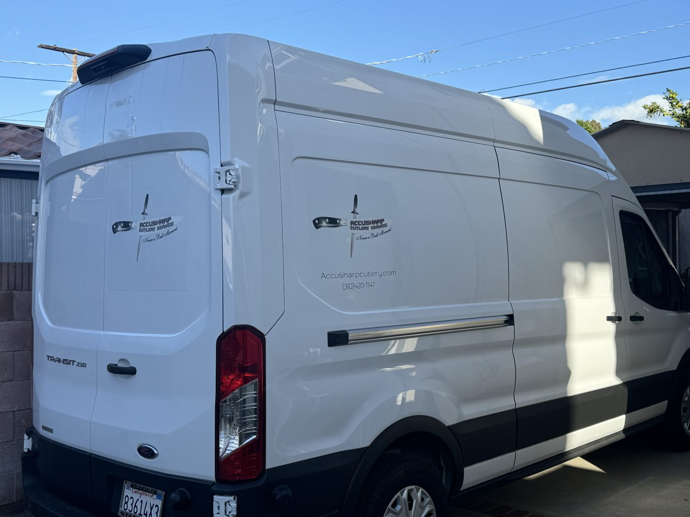

"Never a Dull Moment"

Accusharp Cutlery Service started with a single wheel, a truck, and a simple promise: show up, do the work right, make it easy for the customer. That philosophy hasn't changed in 20+ years.
Today we serve hundreds of home kitchens and dozens of professional restaurants across LA, Long Beach, Orange County, Ventura, and beyond. We're an authorized dealer for Victorinox and Messermeister — the brands we trust and use ourselves.
Whether your favorite chef knife came from a wedding registry in 1998 or you just dropped $400 on a Shun last week, we treat every blade with the same attention. Because a sharp knife is safer, faster, and just better to work with.
Every edge gets the same attention — your $30 paring knife or your $400 Shun. We don't cut corners, literally or figuratively. Full bevel restoration, finish strop, edge warranty on every knife.
If we say we'll be there Tuesday at 10, we're there Tuesday at 10. Reliability is rare in service businesses. We take it seriously because we know your time is worth as much as ours.
Not razor sharp? We re-sharpen free. Edge fails under normal use within 30 days? Same deal. Your satisfaction isn't a bonus — it's the baseline.
Rudy's path to knife sharpening started after serving his country in the United States Marine Corps. Following an honorable discharge, he channeled that same discipline and attention to detail into a new trade — joining Chef Toys, a professional culinary supply company, where he worked under the Accusharp banner learning the craft of professional knife sharpening from the ground up.
In October 2004, Rudy made it official — he purchased the Accusharp arm from Chef Toys and went out on his own. What started as one sharpener, one truck, and a simple promise to do the job right has grown into Southern California's most trusted mobile knife sharpening service. Over 20 years later, the work ethic he carried out of the Marines is still the backbone of every appointment.
"People don't just want sharp knives. They want the feeling of a sharp knife — that moment when the blade glides through a tomato like it's water. That's what I deliver."
Two decades in, Rudy still runs every route personally. From home kitchens in Silver Lake to restaurant lines in Long Beach, every knife gets the same treatment — full bevel restoration, finish strop, and an edge warranty. No shortcuts, no sending it off to someone else. Just the same standard he's held since day one.
If you've got a drawer full of dull knives you've been meaning to do something about, give Rudy a call. No pressure, no sales pitch. Just sharp knives, at your door, on your schedule.
Ready to work together?
"Never a Dull Moment"
Book in 60 seconds. Confirmation within 24 hours.